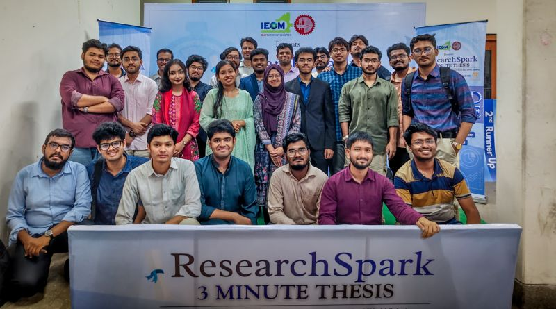

ResearchSpark: 3 Minute Thesis 2026
IEOM Society BUET Student Chapter
Helped organize BUET's 3-Minute-Thesis initiative, bringing together researchers from multiple universities to communicate their work in just three minutes.
- Shaped the event's visual identity and overall attendee experience
- Supported planning through to the Grand Finale alongside the chapter's leadership
- Reinforced the value of clear, real-world-relevant research communication among student researchers